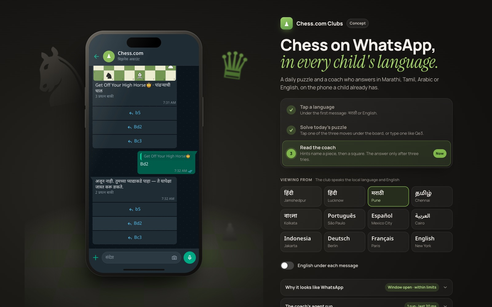

Rahul Jha
For Chess.com · Senior Design Engineer, AI Platforms
You're hiring one person to own the front end of Engage-o-tron, GNS and the admin tools, and the interface layer for streaming, long agent runs and tool calls. I design in code, I built Helix, the design-system workspace ten brand teams use, and I run my own work through a crew of agents I built. The first two pieces below I built for this application: chess on WhatsApp, in a child's own language, which you can play on a real number; and one agent run, up close, because nothing I'd shipped showed one.
Reach me by email, see my code on GitHub, or find me on LinkedIn. Résumé: web · PDF.
The work, in this order

Chess on WhatsAppBuilt for this application: a daily puzzle and a coach on WhatsApp- Agent runsBuilt for this application: one agent run, up close
 The captainAgents that work my queue, including a growth-design skill
The captainAgents that work my queue, including a growth-design skill HelixWhere each brand’s design system lives as code
HelixWhere each brand’s design system lives as code Court booking on coss uiBooking on Cal.com's design system, and a fix merged upstream
Court booking on coss uiBooking on Cal.com's design system, and a fix merged upstream Project 831The venue I co‑founded, and the tools its desk runs on
Project 831The venue I co‑founded, and the tools its desk runs on Build My QuotePrice the stay, not the date
Build My QuotePrice the stay, not the date
The chess club answers on WhatsApp: send PLAYCHESS to play today's puzzle, and "stop" to end it. Or try it in your browser, and read how it works.
The captain's deck also runs here, on invented work: work it yourself. Nothing you do there is saved.
Everything else is on the home page.
Your posting, line by line
- Agent runs“streaming, long-running agent runs, tool-calling surfaces”
- Every state, in words“how model behavior (latency, streaming, uncertainty, failure modes) should surface in the UI”
- Helix“own and evolve the design system: the components, tokens, and patterns”
- A calendar locale fix, merged into coss ui“Contributed to open source UI libraries”
- How I build“Claude Code, Cursor”
- Staff Mode: the desk stopped doing maths“internal tools, admin dashboards”
Hours
I work from Bengaluru. 6:30 to 9:30 pm IST is 9 am to noon in New York (8 to 11 am once the clocks change in November), and I keep that overlap every working day.